1. 처음 온 사용자
URL·메모 진입 → 결과 집중홈에서는 핵심 약속과 대표 Flow를, lookup 이후에는 결과와 다음 행동만 우선한다. 전체 카탈로그는 결과를 방해하지 않도록 접힌다.

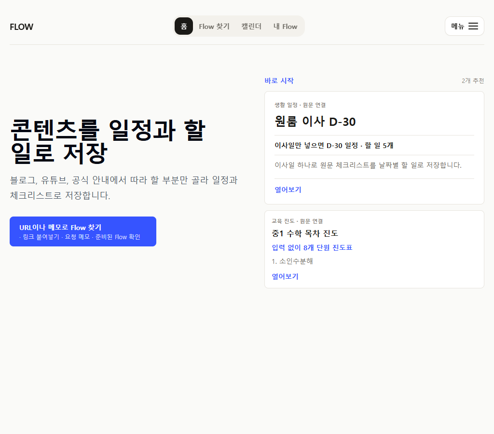

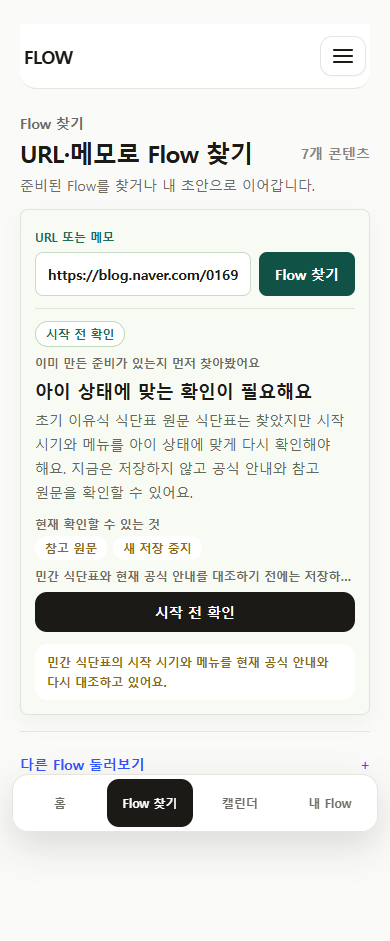
2. 기준 Flow를 검토하고 저장
원문 약속 → 기준일 → 첫 행동 → 전체 순서기존의 다섯 겹 카드 구조를 제거했다. 원문 기준본과 개인 설정의 경계를 유지하면서 사용자는 저장될 실행 순서를 먼저 본다.
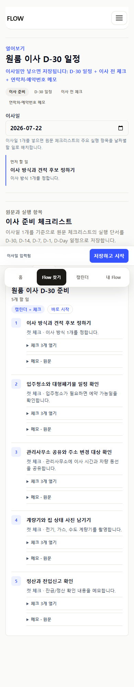
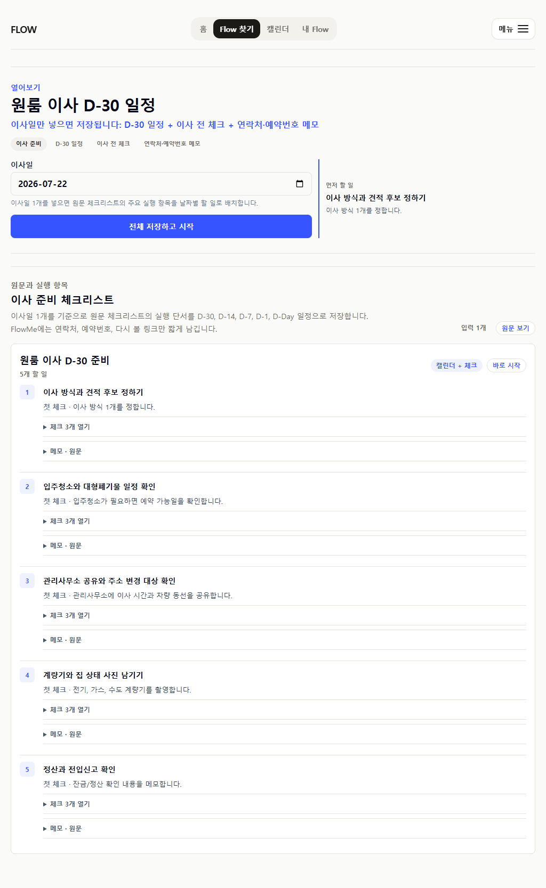
3. 반복 사용자의 My Flow
task-first · 왼쪽 완료 · 열기는 보조오늘·다음·지난 할 일을 한 실행 레인에서 읽는다. wide에서도 빈 대시보드 칸을 채우지 않고 Todoist·Things처럼 제한된 읽기 폭을 유지한다.
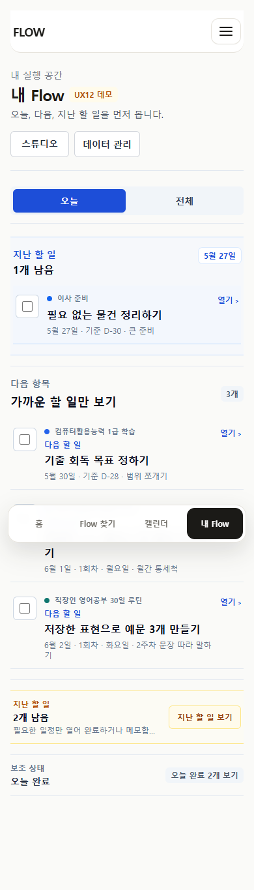
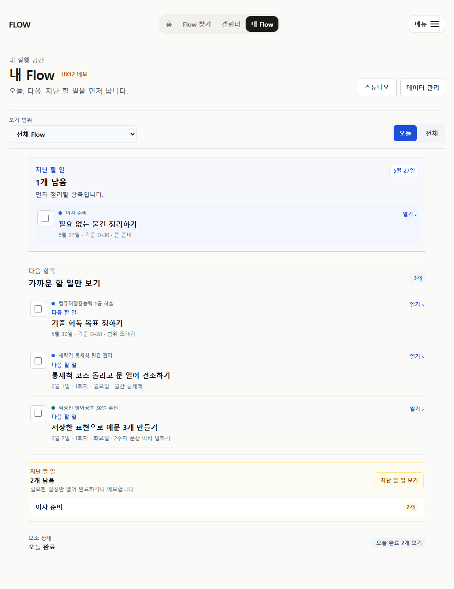
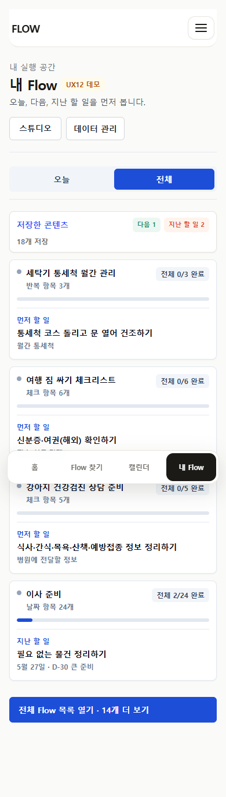
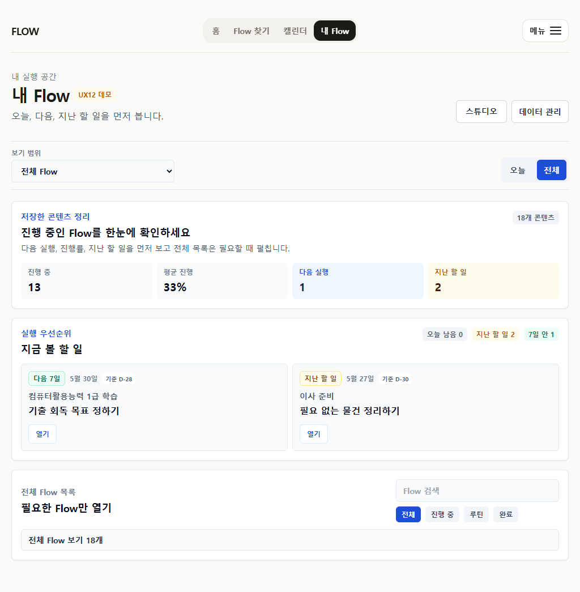
4. 날짜가 중심인 Calendar
date-first · overview와 detail 분리월간 grid는 여러 Flow가 있는 날짜를 짧게 요약하고, 선택일에서는 Flow별 실행 행 전체를 보여 준다. 같은 정보를 카드마다 반복하지 않는다.
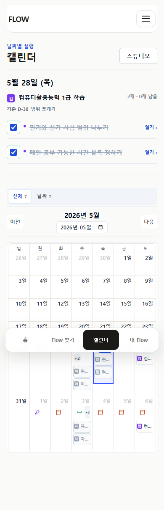
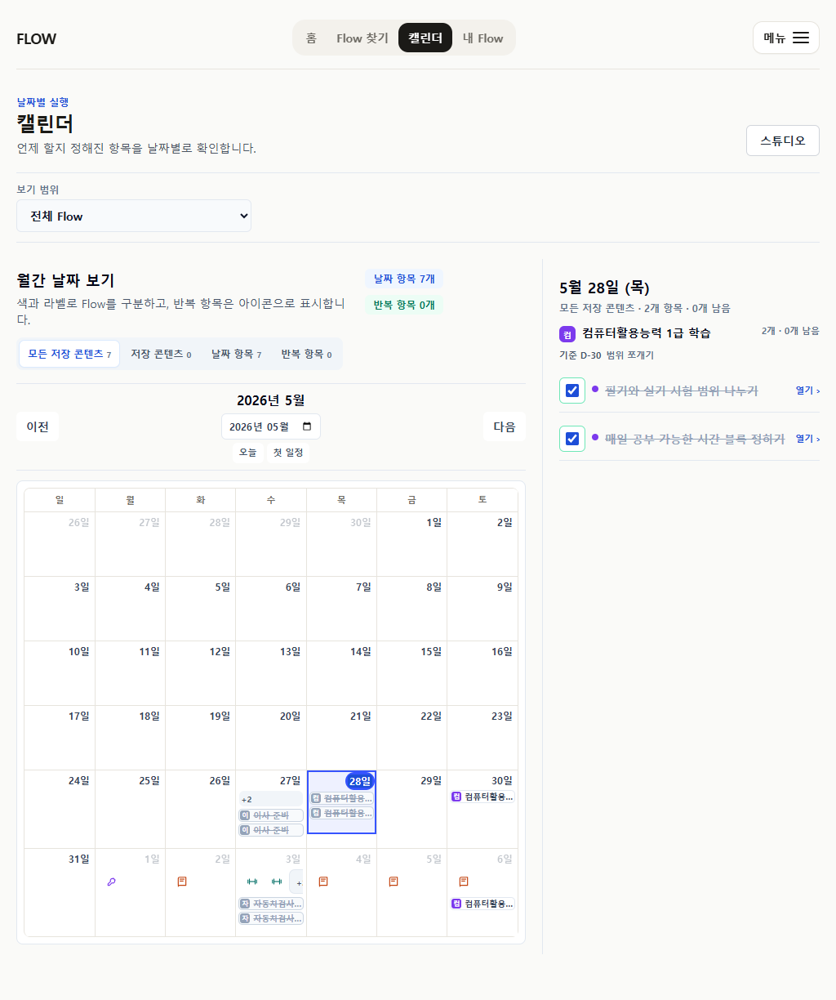
5. 카테고리별 public Flow
공통 hierarchy + category-specific artifactFlow 단위 저장을 1차 행동으로 유지하면서 timeline, checklist, routine은 각 카테고리에 필요한 현재 정보만 먼저 보여 준다.
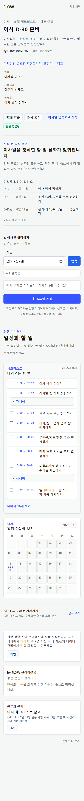
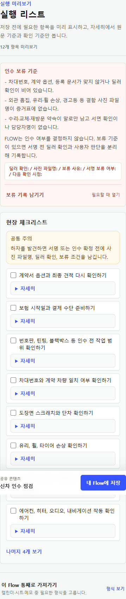
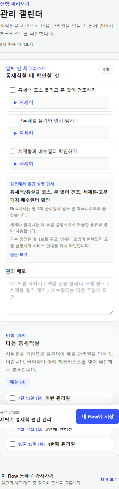
6. Creator와 Studio 보조 표면
재고는 사실대로 · 성과는 관찰 뒤seed의 실행·복사 합계를 실제 성과처럼 노출하지 않는다. 공개 프로필은 콘텐츠, 원문 확인, 주제만 보여 주고 Studio는 개인 초안 선반으로 남긴다.
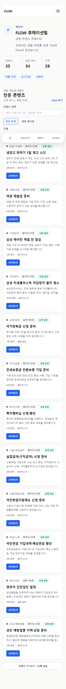
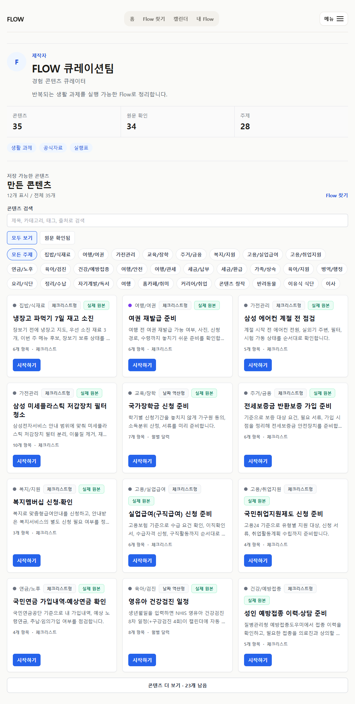
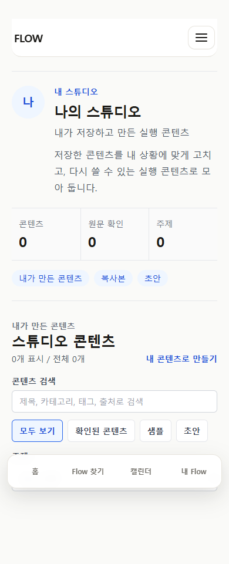
적용한 공통 원칙
서로 다른 카테고리를 한 UI로 억지 통일하지 않고, 실행 행의 문법과 progressive disclosure만 공통화했다.
공통 실행 문법
Flow 식별 → 할 일 제목 → 필요한 날짜/메타 → 완료 또는 열기.
원본과 개인본 분리
원문 기준본은 보존하고 날짜·제목·메모 변경은 비공개 overlay에 둔다.
성과를 과장하지 않음
실제 관찰되지 않은 실행·복사·외부 완료를 사용자 성과로 표시하지 않는다.